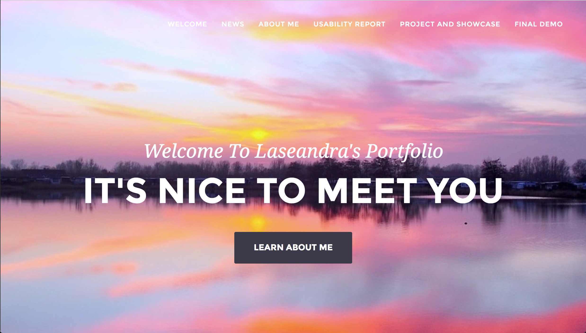

Laseandra Kelly
Portfolio
click here to see portfolio

Experinces
-
Academy of Radiology Research (Washington DC) October 2016 - December 2016
-
Supported communications and legislative affairs staff on projects.
-
Conducted research and data analysis related to federal funding research.
-
Participated in the created and execution of social media plan.
-
Assisted with recruitment of and outreach to member Patient Advocacy Groups.
-
Updated contacts and maintained databases and files.
-
PricewaterhouseCoopers, Start Intern (Seattle, WA) June 2016 - Aug 2016
-
Participated in professional development opportunities focused on topics such as personal brand, building relationships, and developing a business perspective.
-
Engaged in continuous coaching and development with the assistance of a team of mentors ranging from associates to partners.
-
Completed projects within the Advisory line of service resulting in a deeper understanding of private sector consulting and tech clients.
-
Grassroots Campaigns, Feild Manager/Assitant Director (Washington, DC) February 2016 - May 2016
-
Inputted daily total amounts, as well as individual amounts, of money collected, number of stops, and number of monthly sustainers, leading to accurate data being sent to management.
-
Chose location of where teams would canvass to ensure optimal donations.
-
Canvassed in different locations in DC resulting in over $200 in donations each work day.
Skills
-
Can cook well
-
Can type pretty fast
-
Really good dancer
Education
Howard University - Washington, DC
BBA Computer Information Systems
May 2018
Cumulative GPA: 3.68
Major GPA: 4.00